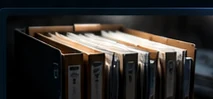
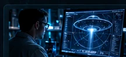

SOURCE REVIEW
AURORA / CASE ATLAS
Зареждане на архив...
ОТВОРИ ПЪЛНОТО ДОСИЕ / OPEN CASE DOSSIER ↗ COUNTRY ARCHIVE ↗ ОТВОРИ ОРИГИНАЛНИЯ ИЗТОЧНИК ↗AURORA / HUMAN INTERFACE · INIT SEQUENCE 01
Избери езика, на който искаш да изследваш AURORA.
AWAITING LANGUAGE SELECTION
Езиците с PREVIEW имат частичен превод и английски текст в останалите секции.
AURORA е проект на UAP Bulgaria за независимо документиране и анализ на необяснени въздушни явления — чрез факти, технологии и общност.
AURORA / GLOBAL CASE INDEX
Всички публикувани архивни истории на една карта. Търси по заглавие, район или източник; избери досие, за да видиш първоизточника.
Маркерите показват описан район, не измерена траектория. Плъзни картата; използвай +/− за мащаб.
—
Броят включва само одобрени и публикувани записи от базата. Демо случаите са изключени.
EXPLORE COUNTRIES ↗AURORA / GLOBAL NEWSROOM
Зареждаме световните източници…
AURORA / RESEARCH OPERATIONS / DEMO
Проследи как един сигнал преминава от наблюдение до обосновано заключение. Това е интерактивна демонстрация на методиката, не система с живи данни.
Илюстративен процес. Не обработваме реални сигнали онлайн.
Започваме със свидетелството: точно време, място, посока, условия и оригинални файлове.
ARCHIVE / DOCUMENTED REPORTS / SOURCED
Исторически свидетелства и документирани записи, не доказателства за извънземен произход. Маркерите показват приблизителен район, а не точна траектория.
Зареждане на архив...
ОТВОРИ ПЪЛНОТО ДОСИЕ / OPEN CASE DOSSIER ↗ COUNTRY ARCHIVE ↗ ОТВОРИ ОРИГИНАЛНИЯ ИЗТОЧНИК ↗Разгледай примерните случаи или отвори пълния архив.
Отвори световния архив с документирани UAP случаи, прочети актуалните новини или подготви свидетелски сигнал. Не смесваме демонстрационни случаи с реални наблюдения.
За да разберем непознатото, първо изключваме познатото. Всеки сигнал заслужава уважение и внимателна проверка.
Географски преглед на постъпилите сигнали и тяхната проверка.

Свидетелства, материали, ход на проверката и ясни заключения.

Методика, проверки за самолети, сателити, дронове и метеори.
Фото, видео и аудио материали с проследим произход.
Демонстрационни локации — НЕ са реални текущи сигнали
Точките са измислени и служат само за тестване на интерфейса.
Не приемаме автоматично, че необяснен обект е извънземен. Проверяваме първо конвенционални обяснения и описваме какво знаем, какво не знаем и защо.
Наблюдавай, задавай въпроси и участвай в изграждането на отворена, независима изследователска общност в България.